2026年11月2日整理。资料用于队友合并报告，非已通过全工程验收的声明。
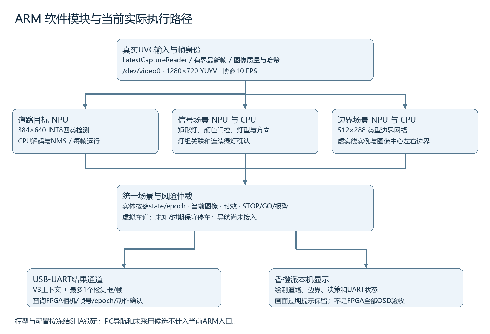
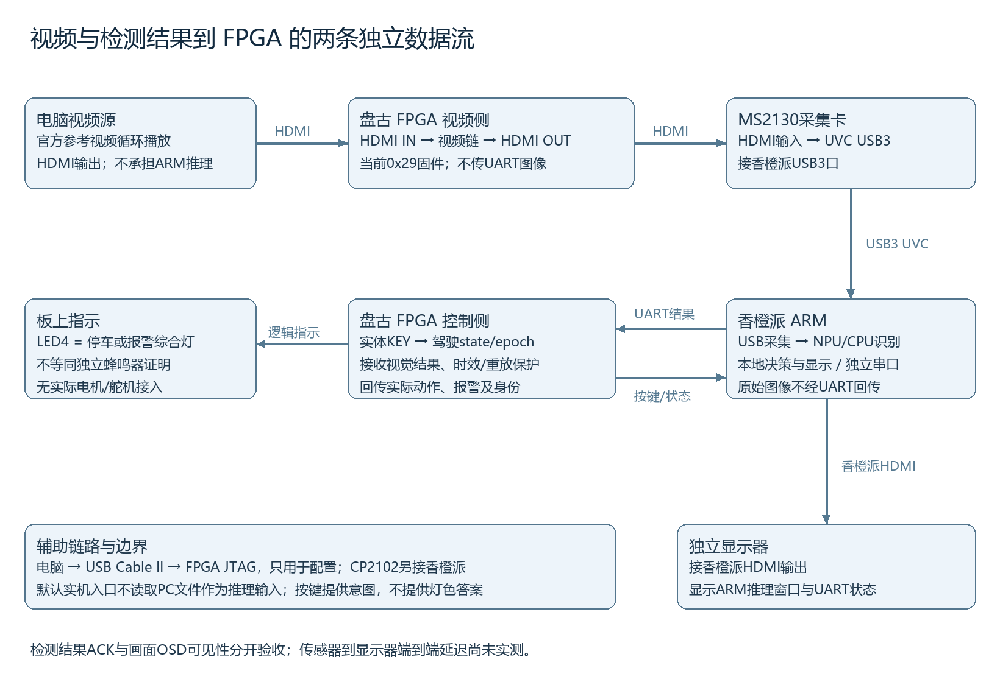
0x29 实时HDMI；香橙派真实桌面截图，保留displayed image expired提示，不能当显示时效已通过
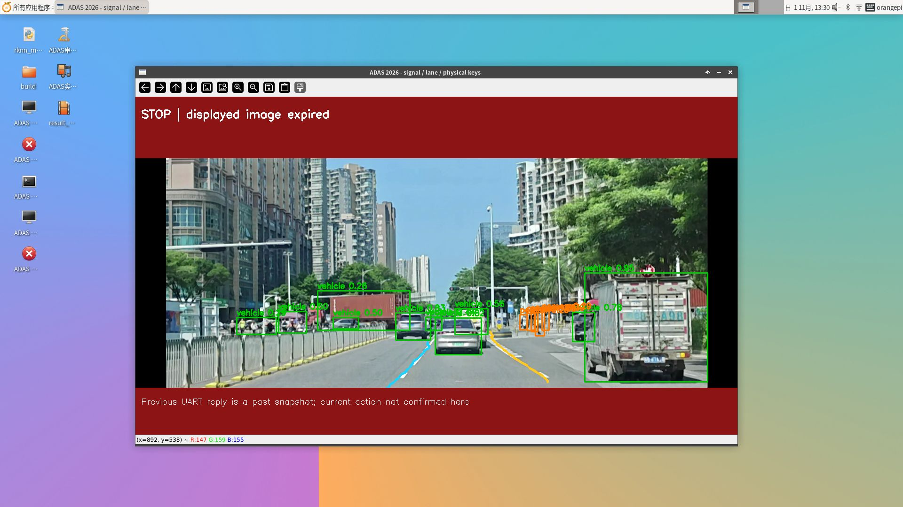
0x29 实时HDMI；显示道路目标和边界推理；有过期提示，和短测流水线数据分开解释
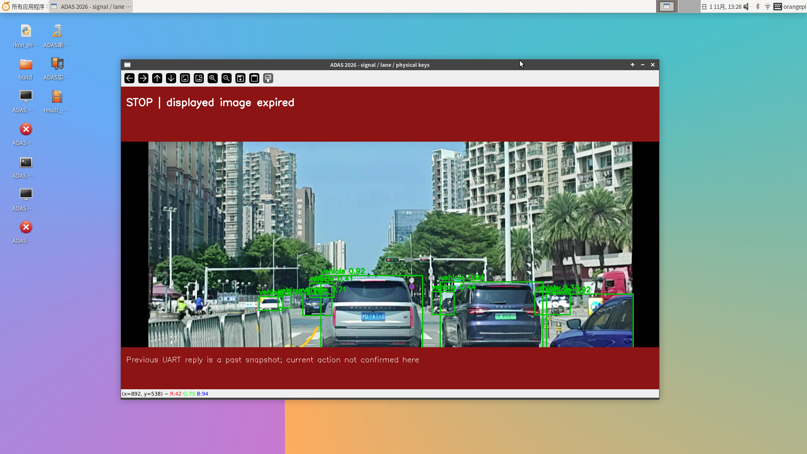
0x29 HDMI 远程驾驶测试；原图明示REMOTE TEST DRIVER；用于说明图像检测与FPGA回包，不能当实体KEY6截图
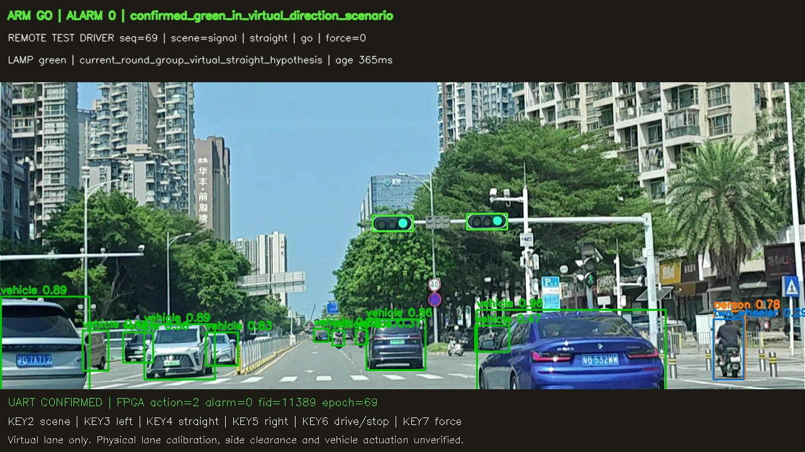
0x29 控制场景；实际输入画面，未叠加决策；实体按键65/90另见独立JSONL
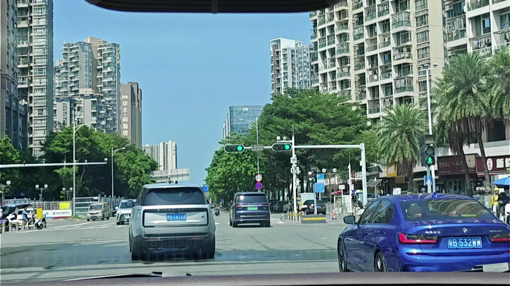
0x29 控制场景；红灯源画面，不能单靠输入图证明停车；89/90及人工确认另附
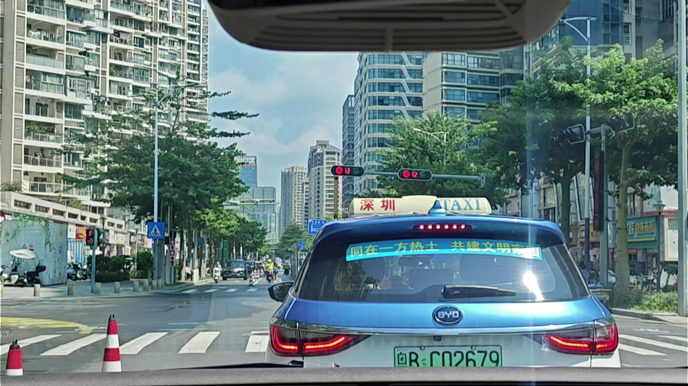
0x29 控制场景；对应强行红灯场景输入；未找到该实体KEY7批次原屏截图，88/90、回包和人答复为主要证据
0x29 HDMI 远程驾驶测试；显示STOP和UART确认；原图标REMOTE TEST DRIVER，实体停车90/90另附
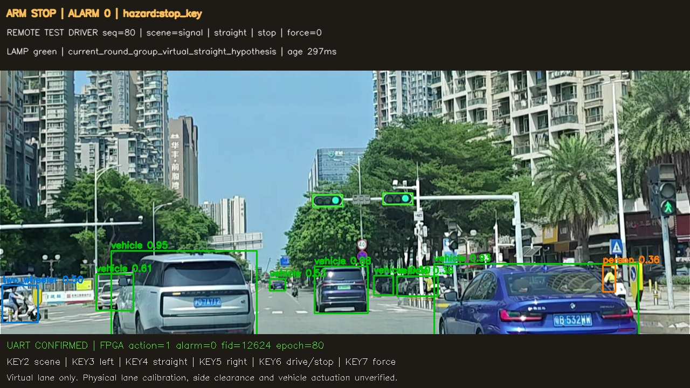
0x27 远程驾驶测试；旧版本左虚线示例；不得转记为当前0x29已完成变道回归
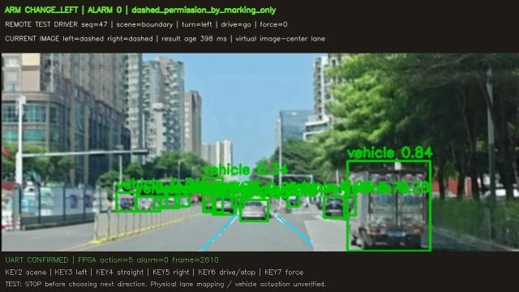
0x27 远程驾驶测试；旧版本强行实线报警示例，非当前版本通过证明
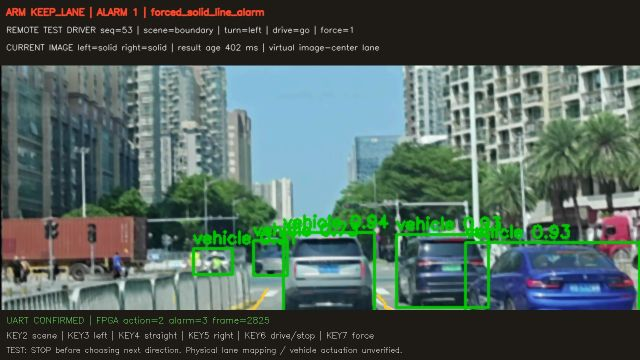
0x27 远程驾驶测试；旧版本右虚线示例
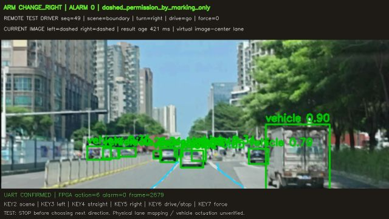
ARM本地文件推理；明确标注LOCAL FILE INFERENCE；该图不证明HDMI输入，KEY6联动有单独人答复
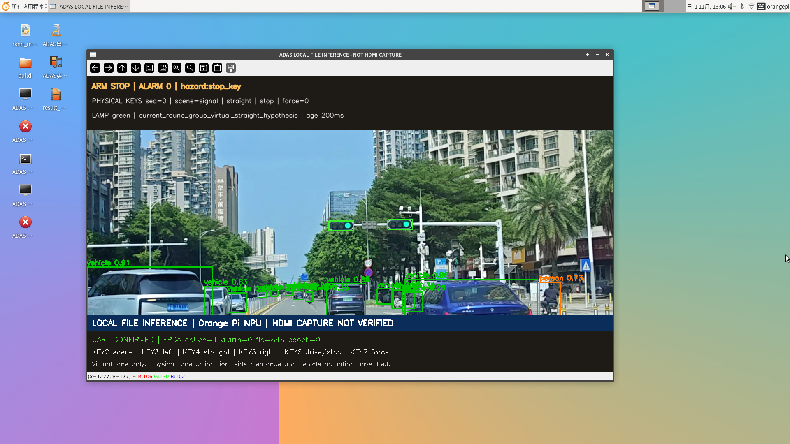
PC离线识别；PC验证可视化，不是香橙派性能或两板联动截图
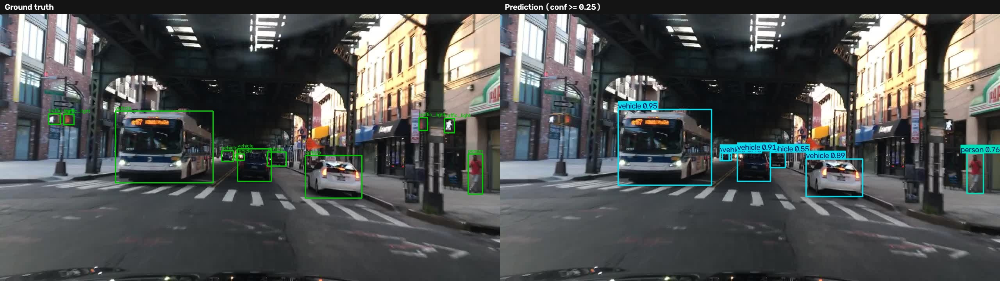
PC开发复核；已知来源导航复核页；不代表导航已在ARM统一程序运行
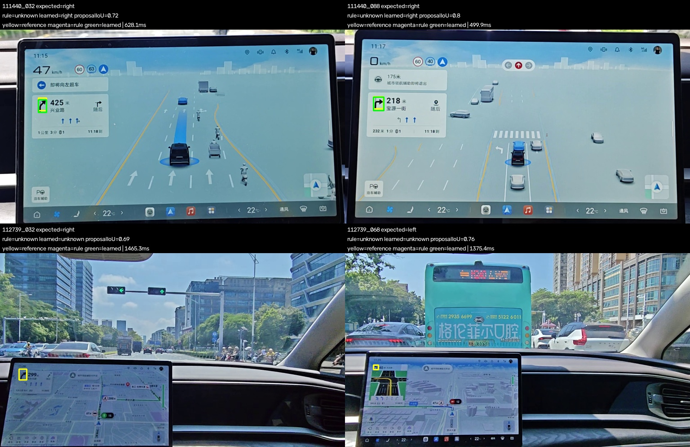